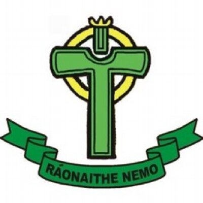
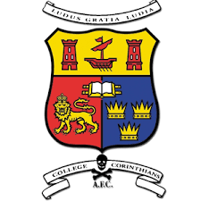
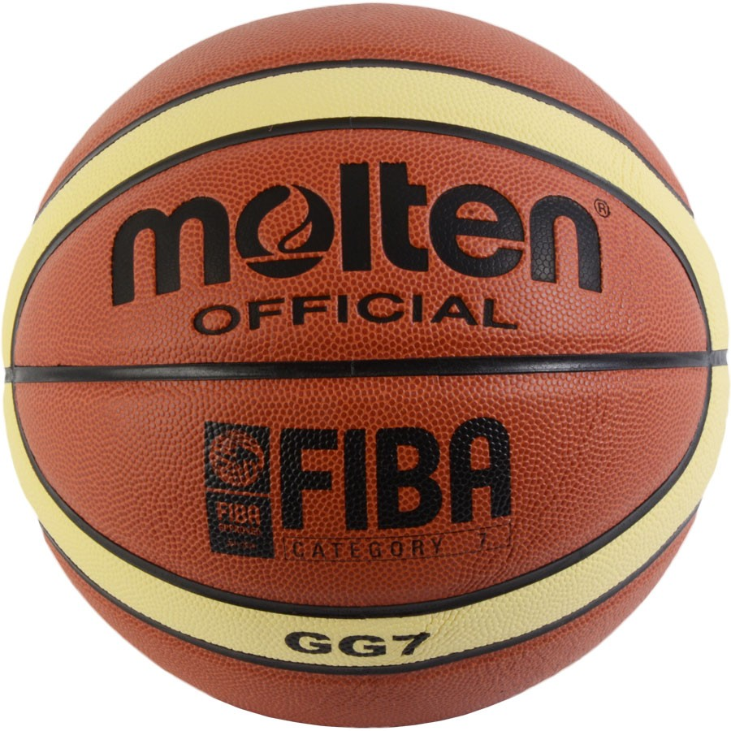
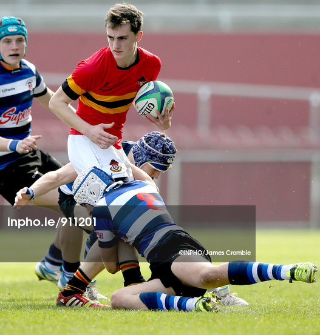

My favourite and most frequently played sport is Gaelic Football. I am a proud member of my local club Nemo Rangers. Some of my fondest memories in recent years are of playing with Nemo. Unfortunately, I have also had tough experiences on the football field. I have dislocated both of my shoulders playing with Nemo. Through this I have experienced first hand the ups and downs of sport.
Up until quite recently, I played soccer with College Corinthians. I was a member of College Corinthians since I was 5 years old. I have always had a great love for soccer and as well as playing the sport, I am a life long supporter of Liverpool. One of my earliest memories was watching Liverpool win the Champions League in Istanbul in 2005.
Basketball is another sport I have always enjoyed playing. I played with St. Anthony’s Basketball Club since I was 8 years old and also played with my school all through secondary school.
I went to Christians Brothers College, where rugby is played by most students in the first few years. I played rugby from first to fourth year. I really enjoyed my time playing rugby with my school. I was a member of our Junior Cup winning team in third year. I decided to stop playing rugby in fifth year in order to have more time to study for the Leaving Cert in the following two years.
